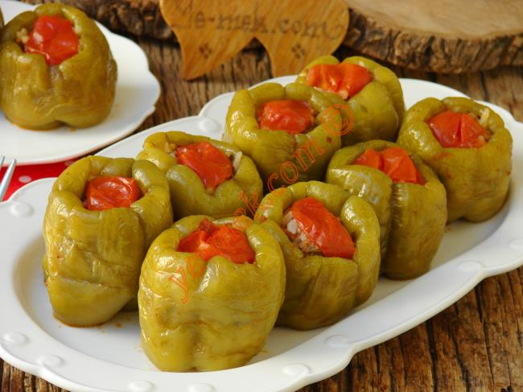

Biber dolması Türk mutfağının vazgeçilmez bir ana yemeğidir. Yapması kolay ve pratik bir yemektir. Genel anlamda sevmeyeni pek olmaz. Kıymalı, etli, zeytinyağlı en yaygın biber dolması çeşitleridir.
Biber dolması Türk mutfağının vazgeçilmez bir ana yemeğidir. Yapması kolay ve pratik bir yemektir. Genel anlamda sevmeyeni pek olmaz. Kıymalı, etli, zeytinyağlı en yaygın biber dolması çeşitleridir.
Biber dolması yapımı için; öncelikle 10 adet orta boy dolmalık biberi yıkayın. Biberleri zedelemeden bıçak yardımı ile saplarını çıkartıp, çekirdeklerini temizleyin.
Dolma iç harcı için; orta boy bir kap içine 200 gr kıyma koyun. Üzerine yarım su bardağı yıkanıp, suyu süzülmüş pirinci ekleyin. Ardından kaba 1 adet küçük boy ince ince doğranmış soğan, 1 diş ince ince doğranmış sarımsak, 1 yemek kaşığı domates salçası, 2 tutam ince ince doğranmış maydanoz, damak tadınıza göre kimyon, karabiber, kuru nane ve tuz koyun. Son olarak kaba yarım çay bardağı zeytinyağının çoğunu koyun. Birazını sosunda kullanmak üzere ayırın. Hazırladığınız dolma iç harcını eliniz ile iyice karıştırın.
Daha sonra dolmalık biberlerin iç kısımlarını üzerinde biraz boşluk kalacak şekilde kıymalı harç ile doldurup, tencere içine dik olarak dizin. Ardından 1 adet domatesi küçük küçük kesip, biber dolmasının üzerine kapatın.
Son olarak küçük bir sos tavası içine 1 tatlı kaşığı biber salçası koyun. Üzerine kalan zeytinyağını ekleyin. Salçanın kokusu çıkana kadar kavurun. Kavrulan salçanın üzerine 1 buçuk su bardağından biraz fazla su döküp, karıştırın. Ardından ocaktan alın. Biber dolmasının üzerine biraz tuz serpiştirin. Salçalı sosu da dolmanın üzerine gezdirerek, dökün.
Hazırladığınız biber dolmasını ocak üzerine alıp, kaynamaya bırakın. Kaynadıktan sonra ocağın altını kısın. Kısık ateş üzerinde pirinçler şişene kadar 30 dakika pişirin.
Biber dolması piştikten sonra ocaktan alıp, 15 dakika kadar dinlenmeye bırakın. Daha sonra sıcak ya da ılık olarak servis edebilirsiniz.